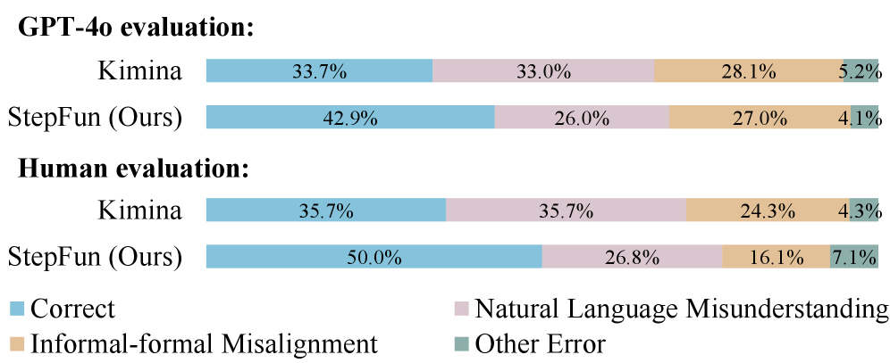
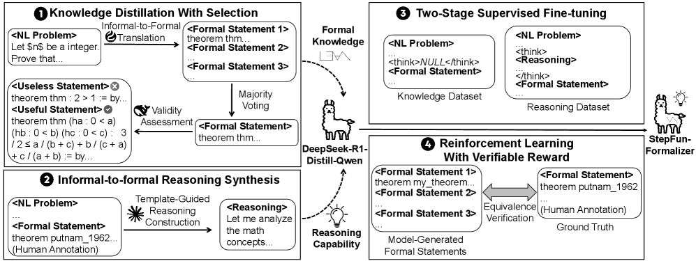
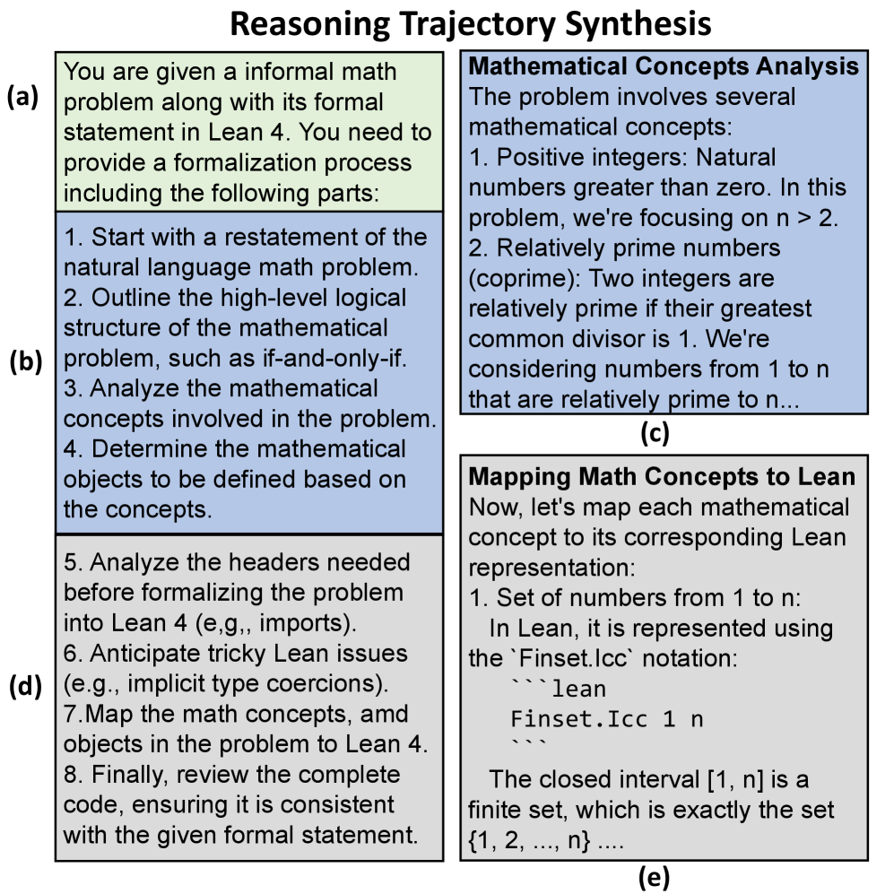
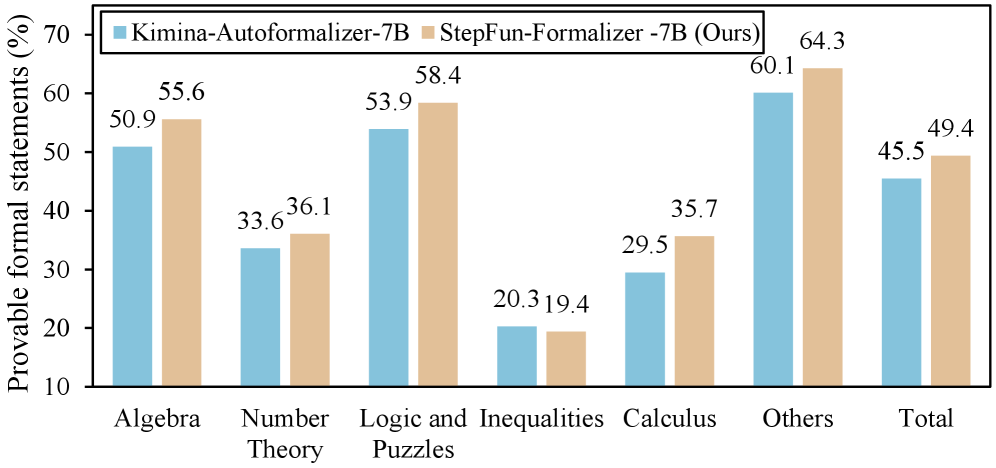

StepFun-Formalizer：用「知识–推理融合」
解锁大模型的自动形式化能力
把一道自然语言数学题，逐字翻译成机器可严格验证的 Lean 4 形式化定理——这就是「自动形式化」。本文指出做好这件事需要两种缺一不可的能力，并给出一条同时注入这两种能力的数据合成与训练流水线 ThinkingF。
30 秒速览
做好自动形式化需要两种能力：① 形式语言的领域知识（知道每个数学概念在 Lean 4 里到底叫什么、怎么写），② 自然语言理解与「非形式→形式」的推理能力（读懂题目真正的意思，并精确对齐到形式表达）。
现有方法各缺一种：通用大模型（如 Claude4-thinking）会推理但缺形式知识，常写出根本不存在的 Lean 函数；专用形式化模型（如 Kimina-Autoformalizer）有形式知识但缺推理，常误解题意、漏掉类型声明。本文提出 ThinkingF——通过「知识蒸馏 + 模板引导的推理轨迹合成 + 两阶段 SFT + 可验证奖励 RL」把两种能力融合进同一个模型。
什么是自动形式化？为什么它很难？
自动形式化（Autoformalization），就是把人类用自然语言写的数学命题，自动翻译成 Lean、Coq、Isabelle 这类形式语言里、能被证明助手逐符号严格检查的定理语句。它是自动定理证明、形式化验证、可验证代码生成等方向的数据基座：有了大量「自然语言题 → 形式化命题」的配对，才能训练更强的证明器。
难点在于：自然语言是模糊、省略的（比如不会写明某个量是自然数还是实数），而形式语言要求每个对象的类型、每条逻辑结构都精确无误，差一个符号就编译不过或语义跑偏。本文给「正确的形式化」下了两条判据：
一个形式化语句 y 是输入题目 x 的正确翻译，当且仅当：
- ① 通过语法检查：
y在形式语言里能编译通过。 - ② 语义等价：
y与x表达的是同一个数学命题。
由于「语义是否等价」很难自动严判，论文用人工标注的形式化语句作为标准答案，再用证明助手判断模型输出是否与标准答案双向等价（BEq）。BEq 的细节见下文「方法」部分。
做好自动形式化，需要两种能力
论文的整个动机建立在一个判断上：一个好的自动形式化模型，必须同时具备下面两种能力——缺任何一种，都会以可预测的方式犯错。
能力一：形式语言领域知识
能力二：非形式→形式的推理能力
一个具体例子：甜甜圈问题（论文 Figure 1）
同一道题，三个模型的表现把两种能力的缺失暴露得淋漓尽致。题目大意：
theorem b :
let target := (550:ℕ)
let per := (12:ℕ)
let dz := Nat.ceil_div target per
...Nat.ceil_div 这个函数。
theorem a : IsLeast
{x | ∃ n:ℕ, x = n*7.49
∧ 12 ∣ n ∧ n ≥ 550}
344.54 := by sorrytheorem c : IsLeast
{x : ℝ | ∃ n:ℕ,
x = n*7.49 ∧ 12*n ≥ 550}
344.54 := by sorry这正是全文的主张：把两种能力融合进同一个模型，才能既写对 Lean 语法、又对齐题目真实语义。
错误到底错在哪？——两类错误的量化分析
作者把人类专家在 100 个样本上识别出的 6 种常见错误，归并成两大类，恰好对应上面两种能力的缺失：
- 自然语言误解（Natural Language Misunderstanding）：在转成形式语言之前就误读了题意——比如误解原意、漏掉数学对象、漏掉条件/结论。
- 非形式–形式错位（Informal-Formal Misalignment）：题意理解对了，但在翻译过程中出错——比如映射到错误的 Lean 对象、逻辑结构错误（如 iff 只写了一个方向）、类型不匹配或未声明类型。
随后用 GPT-4o 对约 10K 条输出做归类、并请专家人工标注 100 条子集，对比 Kimina-Autoformalizer 与 StepFun-Formalizer 的错误分布：

- 四种颜色段含义：蓝色 = 正确（Correct）；粉色 = 自然语言误解；橙色 = 非形式–形式错位；绿色 = 其他错误。每个条形横向加总为 100%。
- 上半部「GPT-4o evaluation」：用 GPT-4o 对约 10K 条大规模输出归类。Kimina 正确率 33.7%，StepFun 提升到 42.9%；同时把「自然语言误解」从 33.0% 降到 26.0%。
- 下半部「Human evaluation」：专家在 100 条子集上人工标注，信号更干净。Kimina 正确率仅 35.7%，StepFun 升到 50.0%；「非形式–形式错位」从 24.3% 大幅降到 16.1%。
- 为什么两段都要看：自动评估覆盖面大但有噪声，人工评估精确但样本小，两者结论一致才有说服力——两类错误都被缓解。
- 它如何支撑全文主张：错误并非随机，而是集中在「两种能力缺失」对应的两类上；StepFun 同时压低两类，正说明「知识+推理」的融合是对症下药。
别人是怎么做的，又卡在哪？
当前主流的「用 LLM 把非形式题翻成形式语句」大体分两类，恰好各自只补上了一种能力，因而都受限于较低的准确率、且依赖大量人工核查。
做法：代表工作如 FormalMATH（用 GPT-4 生成自动形式化训练数据）和 FMC（直接把 DeepSeek-R1 当翻译模型）。输入自然语言题，靠通用模型强大的语言理解直接产出形式语句。
卡在哪：通用语料里形式数据极稀缺，且 Lean 3 与 Lean 4 差异巨大，通用模型常「学错或忽略」关键语言细节——于是写出不存在的函数、用错 API（正如甜甜圈例子里的 Claude4-thinking）。
本质：推理在线，但形式知识掉线。
做法：代表工作如 Lean Workbook 与 Kimina-Autoformalizer。从已有的人工标注「非形式–形式」配对出发，配合专家监督、专家迭代 + LLM 评判等训练专用模型。它们对 Lean 写法很熟。
卡在哪：标注数据集中在狭窄场景，模型缺乏对真实世界问题的理解与推理；翻译时不做 informal-to-formal 推理，于是误解题意、漏声明类型、informal 与 formal 错位（正如甜甜圈例子里的 Kimina）。论文还特别提到 Mathesis 是首个在训练中引入 RL 的自动形式化模型，但它翻译时同样不做推理，导致错位（且其模型与评测未公开，无法直接对比）。
本质：形式知识在线，但推理掉线。
还有一条相关思路是「推理增强的领域模型」（如 Fin-R1、CodeV-R1）：它们多是蒸馏富含领域知识的通用模型来获取领域推理数据，但蒸馏往往让学生模型表现低于老师。本文反其道——先给通用模型补形式知识，再训练推理，从而能追平甚至超过专用与通用模型。
ThinkingF：一条把「知识 + 推理」融合进模型的流水线
ThinkingF 由 4 个阶段组成。阶段 1–2 构造两份数据集（分别补形式知识、补推理能力），阶段 3–4 训练模型（先注入两种能力，再促进融合）。下图是整体流程：

- ① 左上「Knowledge Distillation With Selection」：对一条 NL 问题，用专用模型翻译出多条候选形式语句（Formal Statement 1/2/3…），经「多数投票」选出代表，再做「有效性评估」剔除无用语句（如
theorem thm : 2 > 1这类平凡命题），产出高质量「知识数据集」。 - ② 左下「Informal-to-formal Reasoning Synthesis」：以带人工标注的 (NL 问题, 形式语句) 为种子，用「模板引导的推理构造」生成一段
<Reasoning>（"Let me analyze the math concepts…"），产出「推理数据集」。 - 中间的羊驼 = 基座模型 DeepSeek-R1-Distill-Qwen：两条向上/向下的虚线箭头表示「形式知识」与「推理能力」分别从两份数据集注入基座。
- ③ 右上「Two-Stage Supervised Fine-tuning」：第一阶段用知识数据集（输出里
<think>NULL</think>，不带推理），第二阶段用推理数据集（输出里带完整<think>Reasoning</think>），两阶段 SFT 把两种能力都装进模型。 - ④ 右下「Reinforcement Learning With Verifiable Reward」：模型生成的形式语句与人工标注 Ground Truth 之间做「等价性验证（BEq）」，等价则给奖励，进一步促进两种能力融合。
- 整体数据流：左（造数据）→ 中（基座）→ 右上（SFT 注入）→ 右下（RL 融合）→ 最右输出 StepFun-Formalizer。
跟着流程走一遍（点「下一步」逐阶段拆解）
① 知识蒸馏与筛选 — 造一份「形式知识」数据集
目标：拿到海量高质量的「非形式–形式」配对，把专用模型的形式知识「蒸」出来。做法是让专用模型大量翻译，再做三层筛选去伪存真。
(NuminaMath-1.5 过滤) → Kimina 每题
生成 16 个候选 → 三层筛选
↓
② 推理数据合成 — 造一份「informal-to-formal 推理」数据集
关键发现：直接从通用推理模型蒸馏推理轨迹效果很差（见「有意思的点」里的 off-task 现象）。所以作者手工设计了一个推理模板，把人类做形式化时的思考过程固化下来，再让强指令跟随模型按模板补全推理。模板分两部分：
- (1) 非形式问题理解：复述原题、分析高层逻辑结构（如 iff / 蕴含 / 全称量化）、分解涉及的数学概念与对象。
- (2) 非形式→形式分析：先预判形式化时可能踩的坑（如隐式类型转换、自动变量声明），再用「分而治之」把每个自然语言数学对象逐一映射到 Lean。
(x̂, ŷ) → Claude 3.7 Sonnet
按模板补推理 ĉ → 5.8K 条
推理轨迹
注意：推理是从「题目 x̂ → 已知正确答案 ŷ」之间补出来的，因此正确率有保证——不是让模型自己瞎想，而是为已知正确的配对补写「为什么这样形式化」。
③ 两阶段监督微调（SFT）— 把两种能力都装进模型
基座选 DeepSeek-R1-Distill-Qwen（在非形式数学与代码上推理很强）。两阶段分别灌入两份数据：
- 第一阶段（灌知识，~183K）：输入题目 x，输出形式语句 y；在 y 前插入特殊 token 保持模型内部格式一致、并维持其推理能力。此阶段输出不带显式推理（对应总览图里的
<think>NULL</think>）。 - 第二阶段（灌推理，5.8K）：按推理模型的标准格式，把推理轨迹 ĉ 包在
<think>…</think>内，后接形式语句 ŷ。
两阶段做完，得到初步模型 StepFun-Formalizer-SFT，已同时具备形式知识与 informal-to-formal 推理能力。
④ 可验证奖励强化学习（RLVR）— 促进两种能力融合
在 SFT 模型上继续做 RL，进一步「融合」知识与推理。由于缺高质量标注，复用第二阶段的同一批 5.8K 题做 RL；即便数据相同，继续 RL 仍带来提升。
奖励就是模型输出与标准答案之间的 BEq 双向等价验证结果（等价得 1、否则得 0）。算法用 GRPO（去掉价值函数、按组内相对方式估计优势），并吸收 DAPO 的动态采样与 token 级损失等改进。RL 让 reward 与下游任务性能同步上升。
放大看：推理模板长什么样（Figure 4）
下图是「模板引导的推理构造框架」的具体提示词与示例，对应阶段 2。它把上面说的「问题理解 + 非形式→形式分析」拆成可操作的若干步。

- (a) 绿色块 — 任务描述：告诉模型「给定一道非形式数学题及其 Lean 4 形式语句，请给出一段从非形式到形式的形式化过程」，框定它只做形式化、不做解题。
- (b) 蓝色块 — 步骤清单：要求推理依次覆盖：① 复述题目；② 分析高层逻辑结构（如 if-and-only-if）；③ 分析涉及的数学概念；④ 据概念确定要定义的数学对象及其类型。这对应模板的「问题理解」部分。
- (c) 蓝色块右 — 概念分析示例：一个具体例子，逐条分析「正整数」「互质」等概念在本题中的含义（如 n > 2、最大公约数为 1），示范应有的分析颗粒度。
- (d) 灰色块 — 非形式→形式分析步骤：⑤ 分析所需 headers（import/open/辅助函数）；⑥ 预判 Lean 陷阱（如隐式类型转换）；⑦ 把概念、对象、运算逐一映射到 Lean 4；⑧ 复核并输出与给定形式语句一致的完整代码。
- (e) 灰色块右 — 映射示例：示范把「1 到 n 的整数集合」映射为 Lean 的
Finset.Icc 1 n（闭区间 [1, n]），即「概念 → Lean 写法」的落地。 - 颜色分区的含义：绿 = 总任务；蓝 = 「问题理解」相关步骤与示例；灰 = 「非形式→形式」相关步骤与示例——颜色把模板的两大部分清晰分开。
BEq 到底是什么？为什么用它当评测与奖励 双向扩展定义等价：用证明助手自动搜索，判断两条形式语句是否互相可证。
BEq（Bidirectional Extended Definitional Equivalence，双向扩展定义等价）：两条形式语句 y₁ 与 y₂ 等价，当且仅当存在形式证明能用保语义的策略从 y₁ 推出 y₂、反之亦然。
为兼顾准确与算力，论文用最严格的 BEq 实现：只调用符号启发式策略 exact? 自动搜索等价证明。具体地，把 y₁ 的证明设为 sorry（假设其成立），用 exact? 为 y₂ 搜索一个由 y₁ 出发的证明；若两段证明拼接后在 Lean 4 REPL 验证通过、且确实用到了 y₁，则 y₂ 可由 y₁ 证出；双向都成立即 y₁ ∼ y₂。
BEq@k = 在 k 次尝试中，至少有一次与标准答案 BEq 的样本比例。BEq@1 衡量单次生成准确率，BEq@16 衡量能力上限。附录还验证：相比再上一个 20B 证明模型来判等价，只用 exact? 便宜约 4 倍、仅少判 3 条，性价比更高。
几个值得单独说的发现
作者观察到：像 Claude4-thinking 这样的通用推理模型在做形式化时，会把绝大部分推理花在「解出这道数学题」上，而不是「如何把它翻译成 Lean」——虽然最后往往还是给出了正确的形式语句，但这种推理轨迹对训练自动形式化模型是有害的（学生学到的是解题而非形式化）。这就是为什么直接蒸馏通用模型反而拉低性能，也是作者改用「人工设计模板」来合成推理数据的原因。
看一个 off-task 的真实例子（Claude4-thinking）题目只要求"形式化"，它却一路心算 11111² = 123454321、做 mod 4 分析……
题目：设正整数 a、b 满足 (11111+a)(11111−b)=123456789，证明 a−b 是 4 的倍数。要求只输出 Lean 4 定理语句，不要证明。
Claude4-thinking 的推理却一路在解题：展开左边、算出 11111² = 123454321、化简得 11111(a−b)−ab = 2468、再做 mod 4 分析（11111 ≡ 3、2468 ≡ 0）……最后才"顺手"输出了正确的形式语句：
theorem my_favorite_theorem (a b : ℤ)
(ha : 0 < a) (hb : 0 < b)
(h : (11111 + a) * (11111 - b) = 123456789) :
4 ∣ (a - b) := by sorry形式语句虽对，但整段推理几乎与「如何形式化」无关——把这种轨迹喂给学生模型，自然学不到形式化能力。
分别从 SFT 中移除「知识」与「推理」阶段，在 OOD 基准上看影响（ProverBench / CombiBench，BEq@1 / BEq@16）：
| 数据配置 | ProverBench BEq@1 | ProverBench BEq@16 | CombiBench BEq@1 | CombiBench BEq@16 |
|---|---|---|---|---|
| ThinkingF（完整） | 25.1 | 37.9 | 5.2 | 11.0 |
| − 去掉知识数据 | 24.5 | 37.4 | 3.9 | 10.0 |
| − 去掉推理数据 | 21.8 | 25.3 | 5.3 | 6.0 |
结论：informal-to-formal 推理是性能的主要贡献者，形式知识起补充作用。尤其去掉推理后 BEq@16 大幅下滑（37.9 → 25.3），说明推理对「能力上限」至关重要。
把 SFT 里的推理数据替换为「直接蒸馏 Claude4-thinking」得到的轨迹（同样用 BEq 筛过），对比模板法：
| 推理数据来源 | ProverBench BEq@1 | ProverBench BEq@16 | CombiBench BEq@1 | CombiBench BEq@16 |
|---|---|---|---|---|
| 模板引导（本文） | 25.1 | 37.9 | 5.2 | 11.0 |
| 直接蒸馏 Claude4 | 21.8 | 33.3 | 4.8 | 10.0 |
原因正是上面的 off-task 现象——蒸来的轨迹大多在"解题"而非"形式化"，反而限制了模型学习。
每 50 步评测一次 7B 模型，奖励与各基准平均 BEq@1 同步上升：
即便 RL 复用 SFT 第二阶段的同一批 5.8K 题，继续训练仍能带来提升，印证了 RLVR 对融合两种能力的作用。
它到底有多强？
在三个主流基准上用 BEq 评测：FormalMATH-Lite（与训练分布相近，in-domain）、ProverBench 与 CombiBench（OOD）。一句话结论：
主结果对比（BEq@1 / BEq@16，%）
| 模型 | FormalMATH-Lite | ProverBench | CombiBench | |||
|---|---|---|---|---|---|---|
| @1 | @16 | @1 | @16 | @1 | @16 | |
| 通用模型 | ||||||
| OpenAI o3-pro | 22.6 | 35.5 | 24.7 | 36.2 | 9.0 | 16.0 |
| Claude4-thinking | 20.8 | 32.2 | 24.4 | 35.6 | 9.7 | 18.0 |
| DeepSeek-R1-671B | 18.4 | 31.3 | 23.5 | 34.5 | 8.1 | 20.0 |
| DeepSeek-R1-Distill-7B | 5.2 | 14.6 | 5.4 | 18.4 | 0.4 | 2.0 |
| 专用模型 | ||||||
| Kimina-Autoformalizer-7B | 35.1 | 60.2 | 13.3 | 25.3 | 2.6 | 6.0 |
| Goedel-Formalizer-32B (Sonnet) | 18.7 | 29.2 | 13.6 | 27.6 | 3.4 | 10.0 |
| 本文模型 | ||||||
| StepFun-Formalizer-7B | 38.3 | 61.2 | 25.1 | 37.9 | 5.2 | 11.0 |
| StepFun-Formalizer-32B | 40.5 | 59.3 | 26.7 | 38.5 | 6.9 | 14.0 |
表中 高亮 为该列最佳。注：7B 与 32B 表现相近，作者认为受限于数据规模，32B 需要更多数据才能进一步发挥；在最难的 CombiBench（组合数学、长上下文、强真实世界建模）上，本文模型显著超过同规模专用模型，但绝对值对所有模型都仍偏低。
一个延伸应用：生成更可证的形式语句
把 StepFun-Formalizer 用于端到端定理证明的数据合成：随机取 NuminaMath-1.5 的 1 万题，分别用两个模型翻成形式语句，再用 Kimina-Prover-7B 各生成 16 个证明。结果 Kimina-Prover 能证出 StepFun 产出的 4940 条 vs Kimina-Auto 产出的 4549 条——StepFun 在除「不等式」外的所有领域都产出更高比例的可证语句。

- 纵轴 / 横轴：纵轴是「可证形式语句的比例（%）」，越高越好；横轴是数学领域：代数、数论、逻辑与谜题、不等式、微积分、其他、总计。
- 两种颜色：蓝色 = Kimina-Autoformalizer-7B；橙色 = StepFun-Formalizer-7B。每个领域并排两根柱子做对比。
- StepFun 几乎全面领先：代数 55.6 vs 50.9、数论 36.1 vs 33.6、逻辑与谜题 58.4 vs 53.9、微积分 35.7 vs 29.5、其他 64.3 vs 60.1；唯一例外是不等式（19.4 vs 20.3），StepFun 略低。
- 总计（Total）：49.4 vs 45.5——整体上 StepFun 产出的形式语句更容易被证明器证出。
- 为什么这件事重要：可证语句越多、越多样，越能为下游定理证明模型提供高质量训练数据，形成「形式化 → 证明」的数据飞轮。
再看一个完整 case：商环是否为域（ProverBench）Kimina 凭空造定义导致语法错误；StepFun 正确分析多项式环与理想并映射到 Lean。
题目：设 ℤ₃ 是模 3 的有限域，c ∈ ℤ₃。商环 ℤ₃[x]/(x³+x²+c) 是域，当且仅当 c=2。
Kimina-Autoformalizer：凭空发明了一堆 ZMod3、ZMod3_quotient 定义，把类型写得自相矛盾，最终语法错误——它根本没理解「商环」这个概念。
StepFun-Formalizer：先分析逻辑结构（iff，需证双向）、逐一解释有限域 ℤ₃、多项式环 ℤ₃[x]、由多项式生成的理想、商环、域等概念，预判类型转换等 Lean 陷阱，再把每个概念映射到 Lean（ZMod 3、Polynomial (ZMod 3)、span {...}、IsField、商运算 ⧸），最终输出正确语句：
theorem my_favorite_theorem {c : ZMod 3} :
IsField ((Polynomial (ZMod 3)) ⧸
(span ({X^3 + X^2 + C c} : Set (Polynomial (ZMod 3))))) ↔ c = 2 := by sorry这正是「知识 + 推理融合」的价值：靠推理读懂抽象代数概念，靠知识把它们准确落到 Lean 构造上。